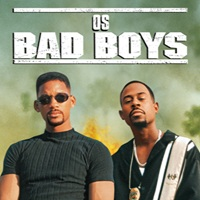
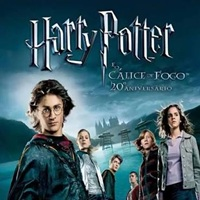
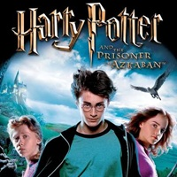
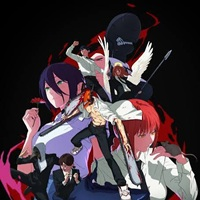

Olá, eu sou o Luis Fellipe!
Estudante do 2º período de Análise e Desenvolvimento de Sistemas. Sou fascinado por desafios lógicos e apaixonado por transformar problemas em soluções, sempre focado em aprimorar minhas habilidades em desenvolvimento web e backend. Sinta-se a vontade para explorar meu site!
Coleção
Apresento os meus gostos variados de forma dinâmica utilizando os conceitos de Flexbox
Há seis cards no total

Bad Boys
Filme
Dois detetives de Miami com personalidades opostas precisam recuperar drogas roubadas da própria delegacia enquanto protegem uma testemunha, misturando muita ação policial e comédia.
Preço: US$ 23 milhões
Duração: 119 minutos

Harry Potter e o Cálice de Fogo
Filme
Harry é misteriosamente escolhido para o mortal Torneio Tribruxo, enfrentando desafios terríveis que culminam no assustador retorno do lorde das trevas, Voldemort.
Preço: US$ 150 milhões.
Duração: 157 minutos
Demon Slayer: Castelo Infinito
Filme
É a primeira parte da aguardada trilogia cinematográfica que adapta o grandioso clímax e a batalha final do famoso anime. A trama de ação acompanha os habilidosos Caçadores de Demônios, liderados por Tanjiro e os Hashiras, enquanto invadem a complexa e labiríntica dimensão de Muzan Kibutsuji para enfrentarem seus piores inimigos, os Luas Superiores, em um confronto épico e definitivo pela sobrevivência da humanidade.
Preço: US$ 20 milhões
Duração: 150 minutos
Jogos Vorazes: A Cantiga dos Pássaros e das Serpentes
Filme
Décadas antes de se tornar o tirânico presidente de Panem, o jovem Coriolanus Snow vê a chance de restaurar a glória de sua família caída quando é escolhido para ser o mentor de Lucy Gray Baird, a carismática tributo do empobrecido Distrito 12. Durante a brutal décima edição dos Jogos Vorazes, suas escolhas ambíguas entre o bem e o mal definirão para sempre o futuro da nação e sua essência.
Preço: US$ 100 milhões.
Duração: 157 minutos

Harry Potter e o Prisioneiro de Azkaban
Filme
No seu terceiro ano em Hogwarts, o jovem bruxo Harry Potter e seus melhores amigos, Rony e Hermione, enfrentam um novo e terrível perigo. O perigoso assassino Sirius Black fugiu da temida prisão de Azkaban e parece estar caçando Harry para matá-lo. Enquanto a escola é protegida pelos assustadores Dementadores, criaturas sugadoras de almas, segredos obscuros do passado são revelados, testando a coragem do trio e mudando tudo.
Preço: US$ 130 milhões.
Duração: 142 minutos

Chainsaw Man O Filme - Arco da Reze
Filme
Após os eventos do anime, Denji finalmente experimenta uma vida normal ao conhecer a misteriosa e encantadora Reze, uma jovem que trabalha em um café. No entanto, o romance logo se transforma em um pesadelo brutal quando ela revela ser a perigosa Demônio Bomba. Uma batalha explosiva toma conta da cidade, forçando Denji e a Segurança Pública a enfrentarem uma nova e letal ameaça.
Preço: US$ 6 milhões.
Duração: 100 minutos
Sobre o projeto
Este projeto foi desenvolvido como um modelo de referência didático para o Desafio de Flexbox da Semana 9 da disciplina de Autoria Web. O objetivo central é fornecer um exemplo puramente autoral em HTML5 e CSS3 que atenda a todas as regras estritas da especificação: desde a ausência de bibliotecas ou CSS Grid até o correto uso de eixos, dimensionamentos relativos, alinhamento automático de botões e quebra responsiva nativa por meio de flex-wrap. Público-alvo: Estudantes, docentes e desenvolvedores que buscam compreender como construir interfaces limpas, resilientes a variações de texto e completamente adaptáveis em diferentes dispositivos (1280px, 768px e 360px) aproveitando exclusivamente o poder do Flexbox.